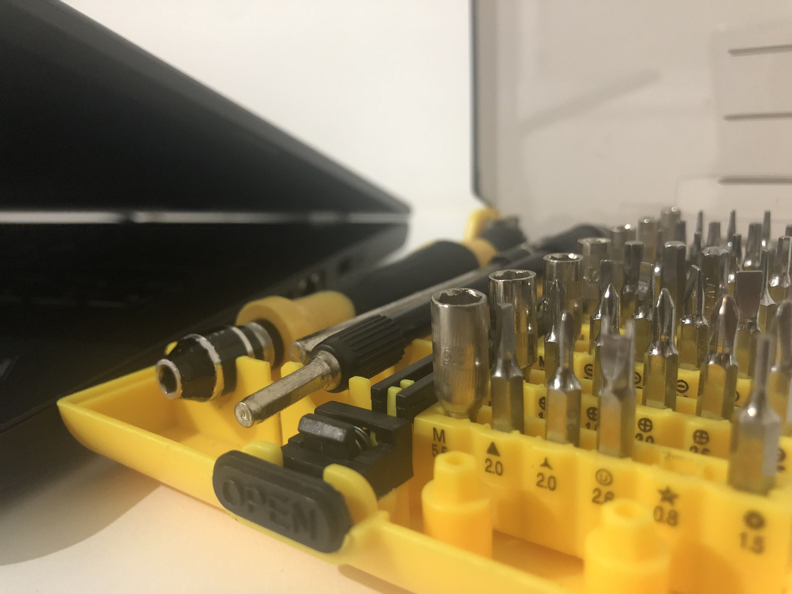

Your computer has a problem? You have a tech related question? Ati can find the solution!
Led by a Data and Computer Scientist with expertise in the following areas
Items such as:
Technical computer problems such as:
Technical hardware problems such as:
Recommendations for new purchases such as:
Installation/Tech issues such as:
Where:
Available to come to your house:
Or drop off service at Suite 2.02, 65 Willis St, Kingsford 2032 NSW
For more information and to discuss your specific needs and how we can help call us on 0404316854 for a free consult or email us at atis.computersolutions@gmail.com
If you would like to discuss anything on this page or for a friendly chat please contact us here: